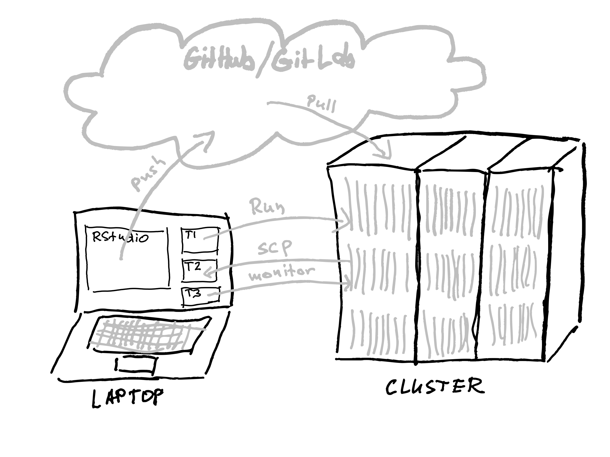
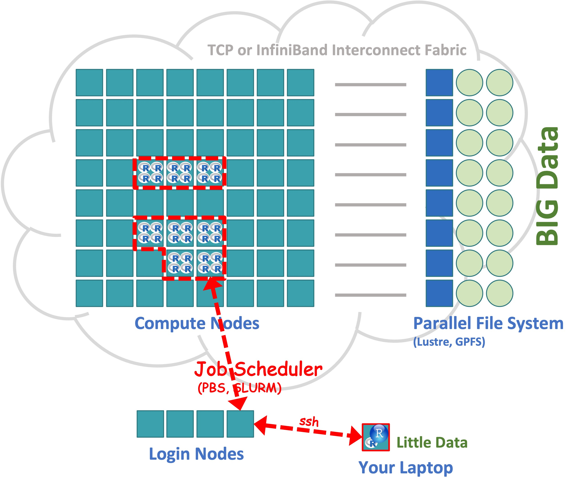
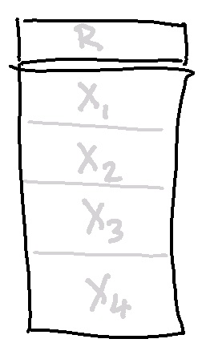
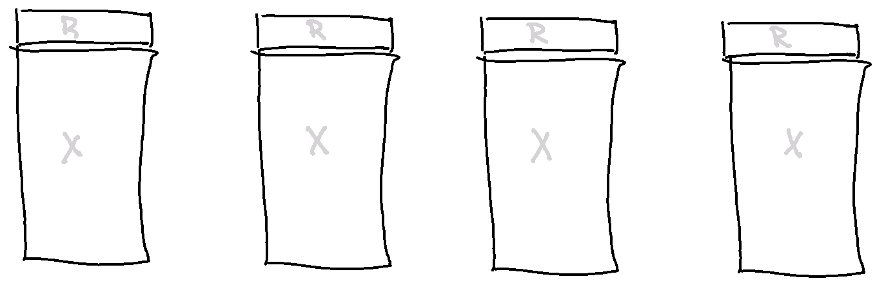
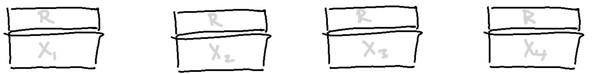
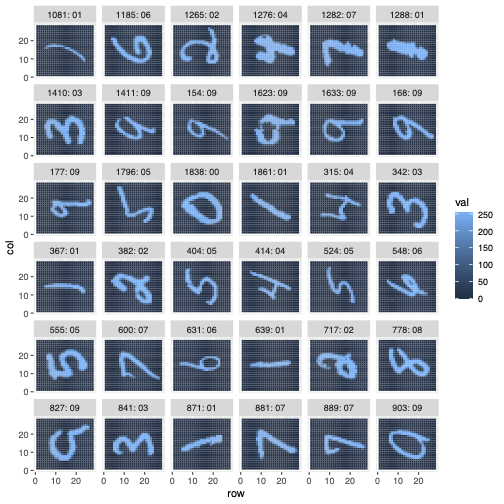

Distributed Computing
Distributed Memory Computing
Running MPI on a Laptop
macOS in a Terminal window:
brew install openmpi- In an R session:
install.packages("pbdMPI") mpirun -np 4 Rscript your_spmd_code.R
Windows
- Web Page: https://docs.microsoft.com/en-us/message-passing-interface/microsoft-mpi
- Download: https://www.microsoft.com/en-us/download/details.aspx?id=100593
pbdMPIhas a Windows binary on CRAN
MPI Hello World
SPMD: \(n\) identical codes running, each given a unique rank: \(0\) to \(n-1\)
hello_world.R
MPI Hello World
Shell script to run 8 instances of hello_world.R
hello_world.sh
#!/bin/bash
#SBATCH --job-name utk
#SBATCH --account=bckj-delta-cpu
#SBATCH --partition=cpu
#SBATCH --mem=20g
#SBATCH --nodes=1
#SBATCH --cpus-per-task=8
#SBATCH --tasks-per-node=8
#SBATCH --time 00:10:00
#SBATCH -e ./utk.e
#SBATCH -o ./utk.o
pwd
module load r
module list
time mpirun -np 8 Rscript hello_world.R- Submit with:
sbatch hello_world.sh
MPI Output utk.o
[gostrouc@dt-login04 mpi]$ cat utk.o
/u/gostrouc/BZAN_583_code/mpi
====================== ALLOCATED NODES ======================
cn095: flags=0x11 slots=8 max_slots=0 slots_inuse=0 state=UP
=================================================================
Hello World! My name is Rank1. We are 8 identical siblings.
Hello World! My name is Rank0. We are 8 identical siblings.
Hello World! My name is Rank4. We are 8 identical siblings.
Hello World! My name is Rank5. We are 8 identical siblings.
Hello World! My name is Rank6. We are 8 identical siblings.
Hello World! My name is Rank2. We are 8 identical siblings.
Hello World! My name is Rank3. We are 8 identical siblings.
Hello World! My name is Rank7. We are 8 identical siblings. - Note the rank order is arbitrary
- In general,
cat()does not even prevent overprinting!
MPI Hello World
SPMD: some control over printing with comm.cat()
hello_world2.R
MPI Output utk.o
[gostrouc@dt-login04 mpi]$ cat utk.o
/u/gostrouc/BZAN_583_code/mpi
====================== ALLOCATED NODES ======================
cn095: flags=0x11 slots=8 max_slots=0 slots_inuse=0 state=UP
=================================================================
COMM.RANK = 0
Hello World! My name is Rank0. We are 8 identical siblings.
COMM.RANK = 1
Hello World! My name is Rank1. We are 8 identical siblings.
COMM.RANK = 2
Hello World! My name is Rank2. We are 8 identical siblings.
COMM.RANK = 3
Hello World! My name is Rank3. We are 8 identical siblings.
COMM.RANK = 4
Hello World! My name is Rank4. We are 8 identical siblings.
COMM.RANK = 5
Hello World! My name is Rank5. We are 8 identical siblings.
COMM.RANK = 6
Hello World! My name is Rank6. We are 8 identical siblings.
COMM.RANK = 7
Hello World! My name is Rank7. We are 8 identical siblings. Two Parallel Levels
hello_balance.R
## This script describes two levels of parallelism:
## Top level: Distributed MPI runs several copies of this entire script. Instances differ by their comm.rank() designation.
## Inner level: The unix fork (copy-on-write) shared memory parallel execution of the mc.function() managed by parallel::mclapply()
## Further levels are possible: multithreading in compiled code and communicator splitting at the distributed MPI level.
suppressMessages(library(pbdMPI))
comm.print(sessionInfo())
host = system("hostname", intern = TRUE) # get node name
mc.function = function(x) {
Sys.sleep(0.1) # replace with your function for mclapply cores here
Sys.getpid() # returns process id
}
## ranks and cores queries
ranks_on_my_node = Sys.getenv("SLURM_NTASKS_PER_NODE")
my_cores = Sys.getenv("SLURM_CPUS_PER_TASK")
cores_on_my_node = Sys.getenv("SLURM_CPUS_ON_NODE")
cores_total = allreduce(my_cores) # adds up over ranks
## Run mclapply on allocated cores to demonstrate fork pids
my_pids = parallel::mclapply(seq_len(my_cores), mc.function, mc.cores = my_cores)
my_pids = do.call(paste, my_pids) # combines results from mclapply
##
## Same cores are shared with OpenBLAS (see flexiblas package) or for other OpenMP enabled codes outside mclapply.
## If BLAS functions are called inside mclapply, they compete for the same cores: avoid or manage appropriately!!!
## Now report what happened and where
msg = paste0("Hello World from rank ", comm.rank(), " on host ", host, " with ", my_cores, " cores allocated\n",
" (", ranks_on_my_node, " R sessions sharing ", cores_on_my_node, " cores on this host node).\n",
" pid: ", my_pids, "\n")
comm.cat(msg, all.rank = TRUE)
barrier() # wait for all ranks to reach this point
comm.cat("Total R sessions:", comm.size(), "Total cores:", cores_total, "\n", quiet = TRUE)
comm.cat("\nNotes: pid to core map changes frequently during mclapply\n", quiet = TRUE)
finalize()Two Parallel Levels Output
[gostrouc@dt-login04 mpi]$ cat utk.o
/u/gostrouc/BZAN_583_code/mpi
====================== ALLOCATED NODES ======================
cn096: flags=0x11 slots=4 max_slots=0 slots_inuse=0 state=UP
cn099: flags=0x10 slots=4 max_slots=0 slots_inuse=0 state=UP
=================================================================
R version 4.3.2 (2023-10-31)
Platform: x86_64-pc-linux-gnu (64-bit)
Running under: Red Hat Enterprise Linux 8.8 (Ootpa)
Matrix products: default
BLAS/LAPACK: /sw/spack/deltas11-2023-03/apps/linux-rhel8-zen3/gcc-11.4.0/openblas-0.3.25-5yvxjnl/lib/libopenblas_zen-r0.3.25.so; LAPACK version 3.11.0
locale:
[1] LC_CTYPE=en_US.UTF-8 LC_NUMERIC=C
[3] LC_TIME=en_US.UTF-8 LC_COLLATE=en_US.UTF-8
[5] LC_MONETARY=en_US.UTF-8 LC_MESSAGES=en_US.UTF-8
[7] LC_PAPER=en_US.UTF-8 LC_NAME=C
[9] LC_ADDRESS=C LC_TELEPHONE=C
[11] LC_MEASUREMENT=en_US.UTF-8 LC_IDENTIFICATION=C
time zone: America/Chicago
tzcode source: internal
attached base packages:
[1] stats graphics grDevices utils datasets methods base
other attached packages:
[1] pbdMPI_0.5-1
loaded via a namespace (and not attached):
[1] compiler_4.3.2 parallel_4.3.2 float_0.3-2
COMM.RANK = 0
Hello World from rank 0 on host cn096.delta.ncsa.illinois.edu with 6 cores allocated
(4 R sessions sharing 24 cores on this host node).
pid: 939702 939706 939708 939712 939715 939719
COMM.RANK = 1
Hello World from rank 1 on host cn096.delta.ncsa.illinois.edu with 6 cores allocated
(4 R sessions sharing 24 cores on this host node).
pid: 939704 939709 939714 939718 939722 939723
COMM.RANK = 2
Hello World from rank 2 on host cn096.delta.ncsa.illinois.edu with 6 cores allocated
(4 R sessions sharing 24 cores on this host node).
pid: 939703 939707 939710 939713 939716 939720
COMM.RANK = 3
Hello World from rank 3 on host cn096.delta.ncsa.illinois.edu with 6 cores allocated
(4 R sessions sharing 24 cores on this host node).
pid: 939705 939711 939717 939721 939724 939725
COMM.RANK = 4
Hello World from rank 4 on host cn099.delta.ncsa.illinois.edu with 6 cores allocated
(1 R sessions sharing 24 cores on this host node).
pid: 1152806 1152810 1152816 1152821 1152824 1152826
COMM.RANK = 5
Hello World from rank 5 on host cn099.delta.ncsa.illinois.edu with 6 cores allocated
(1 R sessions sharing 24 cores on this host node).
pid: 1152804 1152808 1152812 1152814 1152818 1152822
COMM.RANK = 6
Hello World from rank 6 on host cn099.delta.ncsa.illinois.edu with 6 cores allocated
(1 R sessions sharing 24 cores on this host node).
pid: 1152803 1152807 1152811 1152813 1152817 1152819
COMM.RANK = 7
Hello World from rank 7 on host cn099.delta.ncsa.illinois.edu with 6 cores allocated
(1 R sessions sharing 24 cores on this host node).
pid: 1152805 1152809 1152815 1152820 1152823 1152825
Total R sessions: 8 Total cores: 48
Notes: pid to core map changes frequently during mclapplyWorking with a remote cluster using R
Running Distributed on a Cluster
Distributed Memory Tools
Message Passing Interface (MPI)
Single Program Multiple Data (SPMD)
- N instances of the same code cooperate
- Each of the N instances has
rank, {0, . . ., N-1} - The
rankdetermines any differences in work - Instances run asynchronously
- Each of the N instances has
- SPMD parallelization is a generalization of the serial code
- Many rank-aware operations are automated
- Collective operations are high level and easy to learn
- Explicit point-to-point communications are an advanced topic
- Multilevel parallelism is possible
- Typically no manager, it is all cooperation
pbdR Project

Bridge HPC with high-productivity of R: Expressive for data and modern statistics
Keep syntax identical to R, when possible
Software reuse philosophy:
- Don’t reinvent the wheel when possible
- Introduce HPC standards with R flavor
- Use scalable HPC libraries with R convenience
Simplify and use R intelligence where possible
Package pbdMPI
Specializes in SPMD programming for HPC clusters
- Manages printing from ranks
- Provides chunking options
- Provides communicator splits for multilevel parallelism
- In situ capability to process data from other MPI codes without copy
A derivation and rethinking of the
Rmpipackage aimed at HPC clusters- Simplified interface with fewer parameters (using R’s S4 methods)
- Faster for matrix and array data - no serialization
pbdMPI: High-level Collective Communications
Each of these operations is performed across a communicator of ranks. Simplest one is all ranks but rank arrays can be used for multilevel collectives.
reduce()Reduces a set of same-size distributed vectors or arrays with an operation (+ is default). Fast because both communication and reduction are parallel and no serialization is needed.allreduce()Same asreduce()except all ranks in acommget the resultgather()Gathers a set of distributed objectsallgather()Same asgather()except all ranks in acommget the resultbcast()Broadcasts an object from one rank to all in itscommscatter()Broadcasts different pieces of an object from one rank to all in itscommbarrier()Waits on all ranks in acommbefore proceeding
pbdMPI: High-level Collective Operations
\(\small \bf A = \sum_{i=1}^nX_i\) \(\quad\) \(\qquad\) \(\qquad\) A = reduce(X) \(\qquad\) \(\qquad\) A = allreduce(X)
\(\small \bf A = \left[ X_1 | X_2 | \cdots | X_n \right]\) \(\qquad\) A = gather(X) \(\qquad\) \(\qquad\) A = allgather(X)
pbdMPI: Functions to Facilitate SPMD Programming
comm.chunk()splits a number into chunks in various ways and various formats. Tailored for SPMD programming, returning rank-specific results.comm.set.seed()sets the seed of a parallel RNG. If diff = FALSE, then all ranks generate the same stream. Otherwise, ranks generate different streams.comm.print()andcomm.cat()print by default from rank 0 only, with options to print from any or all ranks.
Distributed Programming Works in Shared Memory
Random Forest with MPI
mpi/rf_mpi.R
suppressPackageStartupMessages(library(randomForest))
data(LetterRecognition, package = "mlbench")
library(pbdMPI, quiet = TRUE) #<<
comm.set.seed(seed = 7654321, diff = FALSE) #<<
n = nrow(LetterRecognition)
n_test = floor(0.2 * n)
i_test = sample.int(n, n_test)
train = LetterRecognition[-i_test, ]
test = LetterRecognition[i_test, ][comm.chunk(n_test, form = "vector"), ] #<<
comm.set.seed(seed = 1234, diff = TRUE) #<<
my.rf = randomForest(lettr ~ ., train, ntree = comm.chunk(500), norm.votes = FALSE) #<<
rf.all = allgather(my.rf) #<<
rf.all = do.call(combine, rf.all) #<<
pred = as.vector(predict(rf.all, test))
correct = allreduce(sum(pred == test$lettr)) #<<
comm.cat("Proportion Correct:", correct/(n_test), "\n")
finalize() #<<comm.chunk()
mpi/chunk.r
library( pbdMPI, quiet = TRUE )
my.rank = comm.rank( )
k = comm.chunk( 10 )
comm.cat( my.rank, ":", k, "\n", all.rank = TRUE, quiet = TRUE)
k = comm.chunk( 10 , form = "vector")
comm.cat( my.rank, ":", k, "\n", all.rank = TRUE, quiet = TRUE)
k = comm.chunk( 10 , form = "vector", type = "equal")
comm.cat( my.rank, ":", k, "\n", all.rank = TRUE, quiet = TRUE)
finalize( )Other short MPI codes
bcast.r chunk.r comm_split.R cov.r gather-named.r gather.r gather-unequal.r hello-p.r hello.r map-reduce.r mcsim.r ols.r qr-cop.r rank.r reduce-mat.r timer.r
- These short codes only use
pbdMPIand can run on a laptop in a terminal window if you installed OpenMPI - On the clusters these can run on a login node with a small \(^*\) number of ranks
- Wile in the
mpi_shortsdirectory, run the followingsource ../code_4/modules_MACHINE.shmpirun -np 4 Rscript your_script.r
Shared Memory - MPI or fork?
- fork via
mclapply()+do.call()

- MPI replicated data +
allreduce()

- MPI chunked data +
allreduce()

do.call() is serial
allreduce() is parallel
Package pbdDMAT
ScaLAPACK: Distributed version of LAPACK (uses PBLAS/BLAS but not LAPACK)
2d Block-Cyclic data layout - mostly automated in
pbdDMATpackageBLACS: Communication collectives for distributed matrix computation
PBLAS: Distributed BLAS (uses standard BLAS within blocks)
R code is identical for most matrix operations by overloading operators and
ddmatrixclass
{size=300 position=“left”}
Package pbdML
A demonstration of
pbdDMATpackage capabilitiesIncludes
- Randomized SVD
- Randomized principal components analysis
- Robust Principal Component Analysis?” from https://arxiv.org/pdf/0912.3599.pdf
Hands on Session \(\quad\) rsvd:
Singular value decomposition via randomized sketching
Randomized sketching produces fast new alternatives to classical numerical linear algebra computations.
Guarantees are given with probability statements instead of classical error analysis.
Martinsson, P., & Tropp, J. (2020). Randomized numerical linear algebra: Foundations and algorithms. Acta Numerica, 29, 403-572. https://doi.org/10.48550/arXiv.2002.01387
Hands on Session \(\quad\) rsvd:
Randomized SVD via subspace embedding
Given an \(n\times p\) matrix \(X\) and \(k = r + 10\), where \(r\) is the effective rank of \(X\):
1. Construct a \(p\times k\) random matrix \(\Omega\)
2. Form \(Y = X \Omega\)
3. Decompose \(Y = QR\)
\(Q\) is an orthogonal basis for the columnspace of \(Y\), which with high probability is the columnspace of \(X\). To get the SVD of \(X\):
1. Compute \(C= Q^TX\)
2. Decompose \(C = \hat{U}\Sigma V^T\)
3. Compute \(U = Q\hat{U}\)
4. Truncate factorization to \(r\) columns
MNIST Data
mnist_rsvd.R
Hands-on Session rsvd
Package kazaam
{size=300 position=“left”}
Distributed methods for tall matrices (and some for wide matrices) that exploit the short dimension for speed and long dimension for parallelism
Tall matrices,
shaqclass, are chunked by blocks of rowsWide matrices,
tshaqclass, are chunked by blocks of columnsMuch like
pbdDMAT, most matrix operations in R code are identical to serial through overloading operators andshaqS4class
.footnote[ Naming is a “tongue-in-cheek” play on ‘Shaquille’ ‘ONeal’ (‘Shaq’) and the film ‘Kazaam’]